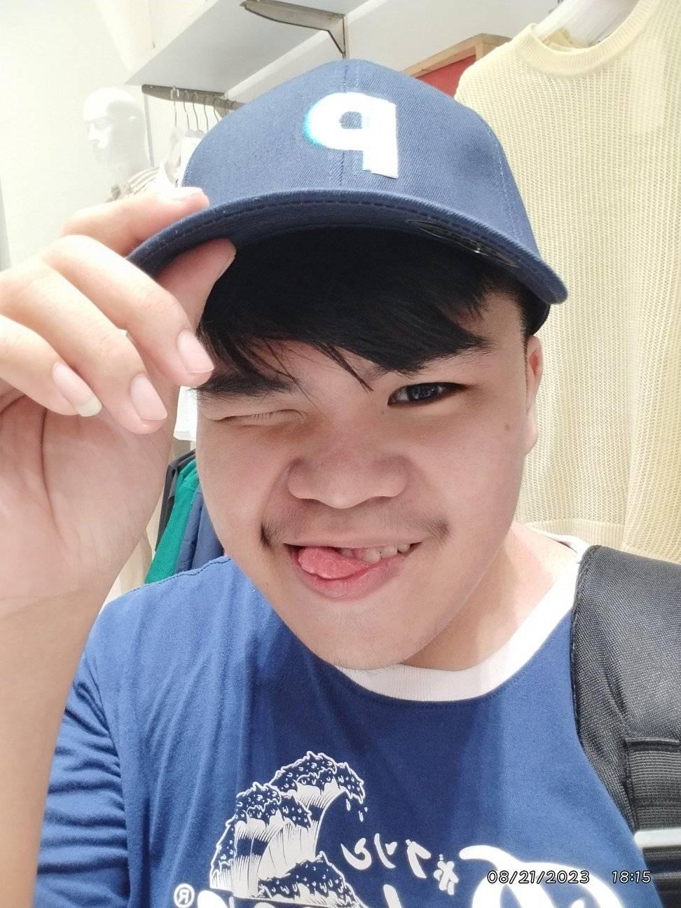

About Me
ART STUDENT • VISUAL CREATOR • STORYTELLER
I am Hiroyuki, an art student focused on creating bold and expressive visuals. My works combine emotion, character, and strong graphic style.
I explore music videos, crafts, traditional arts, and digital illustration. Each project reflects my creative growth and artistic identity.
My goal is to design artworks that feel powerful, unique, and memorable.
— Hiroyuki